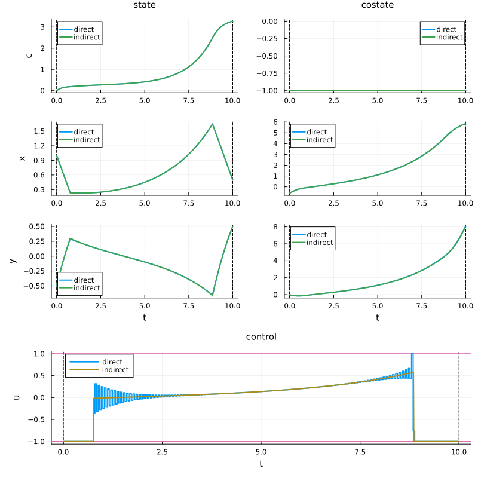
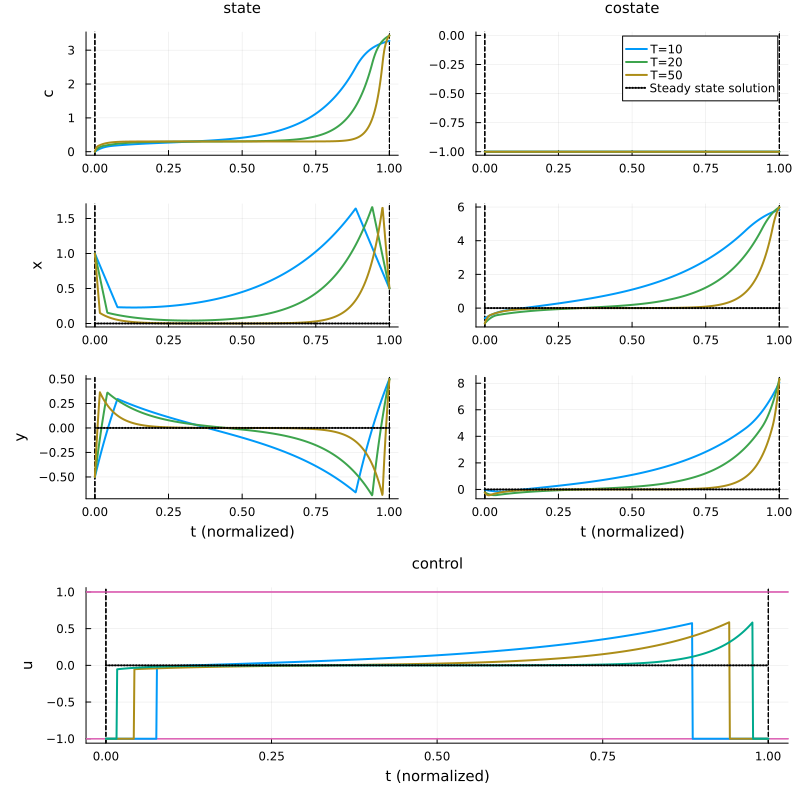
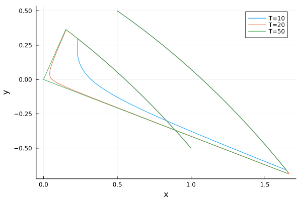

Problem definition
Recall that the optimal control problem we are considering is:
\[ \left\{ \begin{array}{ll} \displaystyle \min_{x,u} J(x,y,u) \coloneqq \frac{1}{2}\int_{0}^{T} \big(x^2(t) + y^2(t)\big) ~\mathrm dt \\[1em] \text{s.c.}~\dot x(t) = u(t), & t\in [t_0, t_f]~\mathrm{a.e.}, \\[0.5em] \displaystyle \phantom{\mathrm{s.c.}~}\dot y(t) = - u(t) - \frac{y(t)}{2}, & t\in [t_0, t_f]~\mathrm{a.e.}, \\[0.5em] \phantom{\mathrm{s.c.}~} -M \leq u(t) \leq M, & t\in [t_0, t_f], \\[0.5em] \phantom{\mathrm{s.c.}~} \big(x(0), y(0)\big) = (1, -0.5), \quad \big(x(T), y(T)\big) = (0.5, 0.5), \end{array} \right.\]
with $M>0$ and $T>0$.
This optimal control problem is associated to the stationary optimization problem
\[ \min_{(x,y,u)} \big \{ x^2 + y^2 \mid (x,y,u) \in \mathbb R \times \mathbb R \times [-M, M], - u = u - \frac{y}{2} = 0 \big\}.\]
The static solution is thus given by $(x^\star, y^\star, u^\star) = (0, 0, 0)$. This solution corresponds to the static equilibrium $(x,y,u)$ which minimizes the cost $J(x,y,u)$ under the control constraint $|u|\leq M$. Our goal is to numerically show that this problem has the turnpike property, i.e. if the final time $T$ is large enough, the optimal trajectory has the following form : starting from the initial state $(x(0), y(0)) = (1, -0.5)$, the trajectory try to reach as fast as possible the static equilibrium $(x^\star, y^\star, u^\star) = (0, 0, 0)$ and to stay close to it until it has to leave it to reach the final state $(x(T), y(T)) = (0.5, 0.5)$.
Solve the optimal control problem using the indirect multiple shooting method, and highlight the turnpike property by using a continuation with respect to the final time $T$.
To do this, let us start by importing the needed package for this page, and defining the optimal control problem.
# Import required packages for optimal control analysis
using Plots # For plotting and visualization
using OptimalControl # Main package for optimal control problems
using NLPModelsIpopt # Interface for Ipopt nonlinear solver
using OrdinaryDiffEq # For solving differential equations
using MINPACK # For nonlinear equation solving (shooting method)
using DifferentiationInterface # For automatic differentiation
using ForwardDiff # Forward mode automatic differentiation
using Ipopt, Optimization, OptimizationMOI # Additional optimization tools
M = 1.
s0 = [0., 1, -0.5]
xT = 0.5; yT = 0.5
F0(s) = [
0.5*(s[2]^2 + s[3]^2);
0;
-s[3]/2
]
F1(s) = [
0;
1;
-1
]
# Define the optimal control problem using OptimalControl.jl DSL
ocp(T) = @def begin
t ∈ [0, T], time # Time
s = (c, x, y) ∈ R³, state # State
u ∈ R, control # Control
-M ≤ u(t) ≤ M # Control's constraint
s(0) == s0 # Initial state
x(T) == xT # Final state
y(T) == yT # Final state
ṡ(t) == F0(s(t)) + u(t)*F1(s(t)) # Dynamics
c(T) → min # Cost
endThe optimal control problem parametrized with the time horizon T that can be adjusted in order to study the turnpike property.
Indirect framework
Denoting $s = (c, x, y)$ the augmented state, and $p = (p_c, p_x, p_y)$ the augmented costate, the pseudo-Hamiltonian is given by
\[H(s, p, u) = p_c \frac{1}{2}(x^2 + y^2) + p_x u + p_y (u - \frac{y}{2}).\]
Since the state dynamic is linear with respect to the control
\[\dot s(t) = F_0(s(t)) + u(t) F_1(s(t)) \quad \text{for all } t \in [0, T]\]
where
\[F_0(s) = \begin{pmatrix} \frac{1}{2}(x^2 + y^2) \\ 0 \\ -\frac{y}{2} \end{pmatrix} \quad \text{and} \quad F_1(s) = \begin{pmatrix} 0 \\ 1 \\ -1 \end{pmatrix},\]
the pseudo-Hamiltonian is linear with respect to the control and can be written as
\[H(s, p, u) = H_0(s, p) + u \, H_1(s, p) \]
where
\[H_0(s, p) = \langle p \mid F_0(s) \rangle \quad \text{and} \quad H_1(s, p) = \langle p \mid F_1(s) \rangle.\]
Thanks to the differential geometry tools provided by OptimalControl.jl described in the documentation, the two Hamitonians $H_0$ and $H_1$ can be directly defined as the lift of the vector fields $F_0$ and $F_1$.
# Lift into (x,λ) space
H0 = Lift(F0)
H1 = Lift(F1)
# Pseudo-Hamiltonian
H(s,p,u) = H0(s,p) + u*H1(s,p)Thanks to the maximization condition provided by the Pontryagin maximum principle, the optimal control has to maximize the pseudo-Hamiltonian for almost all $t \in [0, T]$.
\[u(t) \in \arg\max_{w \in [-M, M]} H_0(s(t), p(t)) + w H_1(s(t), p(t)). \]
The optimal control is therefore given for almost all $t \in [0, T]$ by
\[u(t) \begin{cases} = M & \text{if }\phi(t) > 0 \\ = -M & \text{if }\phi(t) < 0 \\ \in [-M, M] & \text{if }\phi(t) = 0 \end{cases}\]
where $\phi(t) = H_1(s(t), p(t))$ is the commutation function. A singular arc corresponds to a time interval where $\phi(t) = 0$. During singular arc, one has
\[\dot \phi(t) = \{ H_0, H_1 \}(s(t), p(t)) \coloneqq H_{01}(s(t), p(t)) = 0\]
and
\[\begin{align*} \ddot \phi(t) &= \{H_0, H_{01} \}(s(t), p(t)) + u(t) \{H_1, H_{01} \}(s(t), p(t)) \\ &= H_{001}(s(t), p(t)) + u(t) H_{101}(s(t), p(t)) = 0, \end{align*}\]
where $\{F, G\}(s, p) = \langle \nabla_s F(s, p), \nabla_p G(s, p) \rangle - \langle \nabla_p F(s, p), \nabla_s G(s, p) \rangle$ denoted the Poisson bracket of the two Hamiltonians $H_0$ and $H_1$. Please refer to this tutorial for more details about the Poisson bracket and its origin.
Considering that we have a singular arc of the first order (i.e. $H_{101}(s(t), p(t)) \not = 0$ during singular arcs), the singular control is given by
\[u(t) = u_s(s(t), p(t)) = -\frac{H_{001}(s(t), p(t))}{H_{101}(s(t), p(t))}\cdot\]
Again, thanks to the differential geometry tools provided by OptimalControl.jl described in the documentation, one can use the @Lie macro to compute the Poisson brackets and define the singular control.
# Lie bracket
H01 = @Lie {H0, H1}
H001 = @Lie {H0, H01}
H101 = @Lie {H1, H01}
# Singular control
us(s, p) = -H001(s, p) / H101(s, p)Indirect resolution
Thanks to the resolution by direct method, the structure of the solution is given by
\[u(t) = \begin{cases} -M & \text{if } t \in [0, t_1], \\ u_s(s(t), p(t)) & \text{if } t \in ]t_1, t_2], \\ - M & \text{if } t \in ]t_2, T], \end{cases}\]
with $0 < t_1 < t_2 < T$. We say that the control is Bang-Singular-Bang, and one suppose that the solution has this structure for all $T>0$ large enough. Moreover, one suppose that the solution are normal (i.e. $p_c < 0$), and we fix $p_c = -1$ in the following. Thanks to the boundary conditions given by the problem and by the transversality conditions of the Pontryagin maximum principle, we can define the shooting function associated to the optimal structure we have determined. This shooting function has 4 components, corresponding to the 4 unknowns $p_x(0)$, $p_y(0)$, $t_1$ and $t_2$, and the four following equations:
\[\begin{cases} x(T) - 0.5 = 0, \\ y(T) = 0, \\ H_1(s(t_1), p(t_1)) = 0, \\ H_01(s(t_1), p(t_1)) = 0. \end{cases}\]
To compute the flow of the state and costate system, we use the flow function from OptimalControl.jl associated to the three structure, and construct the function shoot!. We use automatic differentiation thanks to ForwardDiff.jl package to compute the Jacobian of the shooting function, and we use direct method to obtain a good initial guess for the solver. Here is a comparison of the direct and indirect solutions for $T = 10$.
function sol(T)
# Solve the optimal control problem using direct method (collocation)
direct_sol = solve(ocp(T), display=false)
# Flows
ϕ0 = Flow(ocp(T), (s,p) -> -1)
ϕ1 = Flow(ocp(T), (s,p) -> +1)
ϕs = Flow(ocp(T), (s,p) -> us(s,p))
# Shooting function
function shoot!(S, ξ)
px, py, t1, t2 = ξ
s1, p1 = ϕ0(0, s0, [-1, px, py], t1)
s2, p2 = ϕs(t1, s1, p1, t2)
sf, pf = ϕ0(t2, s2, p2, T)
S[1] = sf[2] - xT
S[2] = sf[3] - yT
S[3] = H1(s1, p1)
S[4] = H01(s1, p1)
end
# Jacobian of the shooting function
jshoot! = (js, ξ) -> jacobian!(shoot!, similar(ξ), js, AutoForwardDiff(), ξ)
# Initial guess for indirect method
p = costate(direct_sol)
time = time_grid(direct_sol)
u = control(direct_sol)
p0 = p(0)
η = 1e-3
time_ = time[ u.(time) .≥ -1+η ]
t1 = time_[1]; t2 = time_[end]
ξ = [p0[2:3]..., t1, t2]
# Resolution of S(ξ) = 0
indirect_sol = fsolve(shoot!, jshoot!, ξ)
px0, py0, t1, t2 = indirect_sol.x
p0 = [-1, px0, py0]
ϕ = ϕ0 * (t1, ϕs) * (t2, ϕ0)
flow_sol = ϕ((0, T), s0, p0; saveat=range(0, T, 1000))
return direct_sol, indirect_sol, flow_sol
end
T = 10.
direct_sol, sol_10, flow_10 = sol(T)
# Plot
plot(direct_sol, label="direct", size = (800, 800))
plot!(flow_10, label="indirect")
Turnpike property
To highlight that the studied optimal control problem has the turnpike property, we compare the indirect solutions for different values of $T$. We choose to plot the solutions for $T \in \{10, 20, 50\}$. Thanks to the control-toolbox ecosystem, we can easily compute the solutions and plot them on the same plot with a normalized time thanks by simply giving the keyword argument time=:normalize to the plot function.
# Compute solutions for different values of T
_, sol_20, flow_20 = sol(20)
_, sol_50, flow_50 = sol(50)
# Plot
plt = plot(flow_10; time=:normalize, label = "T=10", size = (800, 800))
plot!(plt, flow_20; time=:normalize, label = "T=20")
plot!(plt, flow_50; time=:normalize, label = "T=50")
for i ∈ [2, 3, 5, 6, 7]
plot!(plt, [0, 1], [0, 0], linestyle=:dot, color=:black, label="", subplot = i, lw = 2)
end
for i ∈ [1, 2, 3, 5, 6, 7]
plot!(plt, legend = false, subplot = i)
end
plot!(plt, [0], [0], linestyle=:dot, color=:black, label="Steady state solution", subplot = 4, lw = 2)
plt
We can also plot the state trajectory on the phase plane and observe that when $T$ increases, the state trajectory converges to the steady state solution $(0,0)$.
T = 10; time_grid_10 = range(0, T, 1000)
plot([x[2] for x ∈ state(flow_10).(time_grid_10)], [x[3] for x ∈ state(flow_10).(time_grid_10)], label="T=10", xlabel="x", ylabel="y")
T = 20; time_grid_20 = range(0, T, 1000)
plot!([x[2] for x ∈ state(flow_20).(time_grid_20)], [x[3] for x ∈ state(flow_20).(time_grid_20)], label="T=20")
T = 50; time_grid_50 = range(0, T, 1000)
plot!([x[2] for x ∈ state(flow_50).(time_grid_50)], [x[3] for x ∈ state(flow_50).(time_grid_50)], label="T=50")